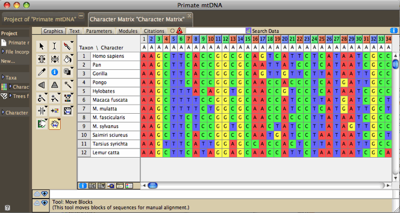
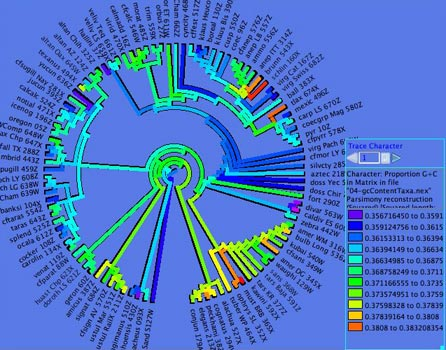
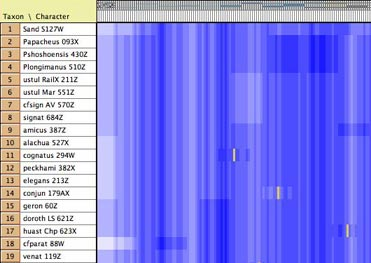
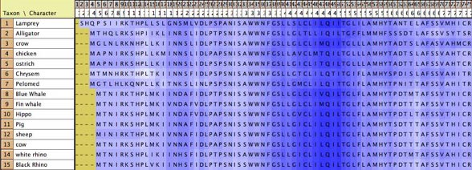

|
|
Molecular data
Molecular data (DNA or protein sequences) can be edited, manipulated,
simulated and analyzed in various ways in Mesquite. Most of the
features discussed elsewhere concerning editing and analysis of
general categorical data also apply to molecular data; here we
focus on features specifically designed for sequence data.
Contents

Editing molecular data
Molecular data can be imported from files of NBRF, FASTA, GenBank/GenPept,
PHYLIP, CLUSTAL, and simple table format. It can also be exported
to
some
of these formats.
The Character Matrix Editor
can be used to edit a molecular sequence matrix. Standard ambiguity
codes are allowed.
Alter/Transform
Tools
The following can be applied to all or the selected portions
of a molecular sequence matrix in the Character Matrix Editor.
These are available under the Alter/Transform submenu of the Matrix
menu (some of these are available under "Other Choices"):
- Reverse Complement (DNA matrix only) —
reverses the order of contiguously selected blocks of sequence
and complements the sequence
- Collapse Gaps — collapses gaps in the
selected block by pushing all sites to the left, to to yield
unaligned sequences
- Remove Gaps-Only Characters — Removes
from the matrix all characters that consist of nothing but gaps.
- Shift Other to Match — Shifts other
sequences to match a region in a selected sequences; described
in the manual for the a href="../../../mesquite/align/aAlignIntro/index.html"
Align package.
- Shift To Minimize Stop Codons — Shifts each
sequence 0, 1, or 2 bases so as to minimize the number of stop codons. The amount each sequence will be shifted will
vary from sequence to sequence. This feature requires that codon positions be designated.
- Convert Uncertainties to Polymorphisms —
Converts all uncertainties in the selection to polymorphisms.
For example, for a nucleotide sequence, a Y (C or T) will be
converted into "C and T".
- Convert Polymorphisms to Uncertainties —
Converts all polymorphisms in the selection to uncertainty.
For example, for a nucleotide sequence, a cell that has both
C and T will be converted into "C or T", i.e., Y.
- Arbitrarily Resolve State Ambiguity —
Any cell that has partial uncertainty in the state (e.g., "Y",
which is C or T) will be resolved into one of its states, chosen
randomly. Thus, a Y will be converted to a C with 50% probability,
and to a T with 50%.
- Nucleotide complement (DNA matrix only) —
enters the complementary sequence into the selected cells
- Trim Terminal Gap Characters — deletes
characters at edges of matrix that are gaps-only.
Other options may appear; see the page on characters
for standard choices in this submenu. You can also apply the other
editing tools described for character
matrices.
The view of the matrix can be adjusted in various ways. Cells
can be colored according to the state at the site (Color
Cells submenu, Character State) or according
to a value like the GC bias (Color Cells submenu, Cell
Value; can request this coloring to use a moving window).
Examples of this are shown below. The Display submenu of the Matrix
menu contains other options such as a Bird's eye view
which makes the cells narrow to show more of the sequences.
Copy Sequence (at bottom of Edit menu) copies
the selected cells of the matrix into the computer's clipboard
as a sequence. That is, whereas the standard Copy would place
into the clipboard selected pieces of the matrix in tab-delimited
text format (e.g., if the sequence AATCA is selected, "A-tab-A-tab-T-tab-C-tab-A"
would be copied), this modified Copy Sequence command does not
include tabs (thus, "AATCA" would be copied). This style
of copying is useful when interacting with programs like Sequencher
(TM). For instance, if you want to find a piece of sequence
in a matrix in Mesquite within a chromatogram viewer of Sequencher,
do the following: select the sequence in Mesquite, choose Copy
Sequence, then go to Sequencher, select Find Bases, and paste
the sequence as the search string.
Alignment
The Align
package contains utilities for sequence alignment. These include
manual alignment tools (for shifting blocks of sequence, for example),
and automated tools (e.g., sending a region of the matrix to ClustalW
to align, or a pairwise alignment tool in the editor that will
align one sequence to another). See the
Align
manual for more details.
Finding Sequences
You have several options to find sequences in a matrix.
First, you can use the Search Data  entry at the top of the Character Data Editor to enter a sequence
and hit return. (If the entry indicates Search Features instead,
touch on the brown & or / until it shows a violet
and is labeled Search Data.) The results of the search will be
displayed in the Search results window.
entry at the top of the Character Data Editor to enter a sequence
and hit return. (If the entry indicates Search Features instead,
touch on the brown & or / until it shows a violet
and is labeled Search Data.) The results of the search will be
displayed in the Search results window.
Second, pieces of sequences can be found using the Find Sequence
and Find All Sequences submenus of the Edit menu. The current
options are:
- Matching Sequence: This finds sequences
matching a target sequence the user enters. The search allows
a certain number of mismatches. Optionally, it can search for
the reverse, complement and reverse complement of the target
sequence.
- Maintain Target Match:
This highlights and maintains highlighted the first occurence
of a given sequence in a given taxon. First, you are asked which
taxon to search in. Then, it displays a panel like this:

underneath the matrix. The first button (red X) is to close
the panel; the second pauses the search; the third allows you
to select another taxon as your focus. If you type a sequence
into the text area, the matching sequence (if any) will be highlighted
in the matrix. Mesquite is constantly monitoring this text,
and so you don't need to give any command to find again if you
change the text. This is useful if working with a program like
Sequencher. If you see a stretch of sequence while viewing chromatograms
that you'd like to find in the matrix in Mesquite, type in the
sequence into the text box and you will quickly be taken to
it in the taxon.
- Maintain Clipboard Match:
This is similar to Maintain Target Match, except that it obtains
the search string not from the text area but from the clipboard.
If the clipboard changes, the function will automatically find
the sequence again in the matrix. This is useful if working
with a program like Sequencher. If you turn on Maintain Clipboard
Match, then you can copy stretches of a sequence within Sequencher,
and Mesquite will automatically highlight it, without your having
to return to Mesquite or give any other command to it. (Mesquite
is constantly monitoring the clipboard to see if it changes).
Combining molecular matrices
or sequences
Often you have sequences in different matrices, and you need
to fuse them into a single matrix for analyses. You may be adding
new sequences from an existing gene, or you may be adding new
genes for existing taxa.
Adding new taxa/sequences
If you want to take two matrices and concatenate them vertically,
i.e. add new taxa to an existing set of gene sequences, then you
can do it either from a menu or using Drag and Drop.
- Include Taxa from
File: In the Taxa&Trees menu, this function reads
in an external file and attempts to concatenate taxa from the
file onto taxa blocks of the current file, and also to add their
data to existing matrices. This is useful to add new gene sequences
to an existing file. File formats that can be incorporated are
NEXUS, NBRF, and FASTA. This incorporation will NOT preserve
the associated information of the external NEXUS file such as
footnotes for the taxa and characters.
- Drag and
Drop: If you drag FASTA, GenBank/GenPept, or NBRF
files onto a Character Matrix Editor showing sequence data,
the
sequences
in these
files will be added to the matrix as new taxa. All files that
you drag and drop in one operation must be of the the same
file format.
Adding genes
If you want to take two matrices and concatenate them horizontally,
i.e. add new genes to an existing set of taxa, then how you do
this depends on whether your taxa have the exact same names in
the two matrices, or not.
- Concatenate
Matrices: If the corresponding taxa have the exact
same names in the two matrices (as shown in the example above
— taxon B has the exact same name in both matrices, as
does taxon C), then you can use the (Character
Matrix Editor)Matrix>Utilities>Concatenate Matrices
command to fuse the matrices. If both matrices belong to the
same taxon block, then simply use the command to concatenate.
On the other hand, if the matrices have overlapping but not
identical taxon blocks, then you must bring both matrices along
with their respective taxon blocks into memory. Let's assume
you have two separate files, one for Gene 1 and one for Gene
2. Copy the first file (so as to save an original copy of gene
1 on its one), and give the copy a name like "Fused.nex".
Then, open it in Mesquite. Next, use Link File in the edit menu
to read in the second file. Now, go to the Character Matrix
Editor for the Gene 1 Matrix, and select Concatenate Matrices
from the Utilities submenu. Later you can choose Close File
from the File menu to close the linked file for gene 2, and
save your fused file.
- Fused Matrix Export (NEXUS):
If the corresponding taxa have different names in the two matrices,
then this is the easiest method to fuse, although it can also
be useful when taxon names are the same. It is a special file
exporter that can fuse matrices of different genes as it exports.
It is available by choosing Export in the File menu. If you
have a single taxa block with multiple matrices
attached to it (e.g., one for each gene), then this exporter
will write a single combined matrix with the sequences of different
genes concatenated for each taxon. It will also write CHARPARTITION
and CHARSETs to record which section of the fused matrix corresponds
to which source matrix. It will also write a MrBayes block with
that program's partitioning commands. If the different matrices
are of mixed type (DNA, protein, non-molecular categorical)
then you have a choice between reducing them to simple categorical
data or maintaining a mixed matrix (suitable for MrBayes). Often
however, you will have slightly different names for the sequences
of different genes, and these may therefore exist in the file
represented by different taxa blocks. For instance,
you may have a taxa block with taxa "A1", "B1",
and "C1" with corresponding matrix for COI sequences
(gene 1) from species A, B and C, and another taxa block with
taxa "B2", "C2", and "D2" for
28S sequences (gene 2) from the same species. You want to fuse
them as follows:
The Fused Matrix exporter permits you to export these into a
single matrix as long as you have indicated how the sequences
correspond to one another. To do this, we suggest you create
a new taxa block representing the species or specimens. In this
example, create a taxa block "Species" with taxa A,
B and C. This will be the "master block of taxa" that
will organize the export. (Alternatively, you could choose one
of the genes' taxa blocks as the master block.) Set
up a Taxa Association between the master block of taxa and
each of the other blocks of taxa. With the first Taxa Association
between species and Gene 1 indicate that "A1" belongs
with species A, "B1" belongs with species B, and "C1"
belongs with species C. Set up the species-Gene 2 association
similarly. The two taxa association will look like this in the
List of Taxa window for the master taxa block:
 Then when you choose Fused Matrix Export, choose Species as
your master taxa. The exporter will then find all of the data
corresponding to each species, either under the species taxon
itself or under one of the linked taxa indicated by the Taxa
Association, and compose a fused matrix. If a single master
taxon has more than one corresponding taxa in one of the other
matrices, the data are merged using the same rules as for Merge
Taxa.
Then when you choose Fused Matrix Export, choose Species as
your master taxa. The exporter will then find all of the data
corresponding to each species, either under the species taxon
itself or under one of the linked taxa indicated by the Taxa
Association, and compose a fused matrix. If a single master
taxon has more than one corresponding taxa in one of the other
matrices, the data are merged using the same rules as for Merge
Taxa.
Other Tools for Managing Molecular matrices
Managing sequences in different matrices, especially if from
different genes, can be difficult. Several functions assist in
this. These features are not restricted to molecular data, but
we anticipate most of their use will be with sequences.
- Alternative Taxon Names:
This feature allows you to have several alternative naming schemes
for taxa, e.g. one set of names that includes your specimen
codes, another set that uses formal taxonomic names (for publication),
another set whose names are condensed for exporting the file
to programs like CLUSTAL that can handle only short names, and
so on. For details see here.
- Translation to protein:
a new matrix of amino acids, derived by translation from existing
protein-coding DNA matrix, can be formed by choosing Characters>Make
New Matrix from>Translate DNA to Protein. This request that codon positions, and the correct genetic code,
be assigned.
Display
of Sequences
Protein-coding sequences can be colored by the amino acid into
which a triplet would be translated (under the genetic code for
that triplet) by choosing Matrix>Color Cells>Color
Nucleotide by Amino Acid.
Consensus
Sequences
Consensus Sequences can be displayed above the character matrix
by choosing Matrix>Add Info Strip>Consensus
Sequence Strip, as indicated below by the arrows:

In the above examples, two consensus sequences strips are displayed,
with slightly different options.
Options are available by touching on the consensus sequence:

Codon Positions
You can assign codon positions to a portion of a sequence by the following steps:
- Open the character list window by choosing Characters>List of Characters.
- In the list window, select the characters whose position you wish to designate (choose Select All
from the Edit menu if you wish to select all characters).
- Touch on the title box ("Codon Position") of the Codon Position column, and a menu will drop down. That menu will have a
submenu, called "Set Codon Position", that contains various options for setting codon positions.
Genetic Codes
The genetic code for sequence data can be specified in Mesquite's
List of Characters window (by choosing List of Characters, and
then Columns>Current Genetic Codes,
or with a data matrix frontmost, Matrix>Genetic
Codes...). Genetic codes are assigned to individual
characters (thus allowing one to have a mixed matrix of mitochondrial
and nuclear data, for example). To assign a genetic code, choose
select the characters, and use the popup menu of the title of
the "Genetic Code" column in the List of Characters
window.
The genetic code affects, among other things, the Translate DNA
to Protein command, as well as the coloring of nucleotide sequences
if Color Nucleotide by Amino Acid is chosen.
Interactions with GenBank
The following features allow one to interact with GenBank. They
require that you have an Internet connection.
- BLAST in Web Browser: Select a sequence or
portion thereof in the data matrix. Choose Matrix>Search>BLAST
in Web Browser, and Mesquite will send a BLAST request
to GenBank to search for matching sequences. Your default web
browser should open and take you to the BLAST page.
- Top BLAST Matches: Select a sequence or portion
thereof in the data matrix. Choose Matrix>Search>Top
BLAST Matches, and you will be presented with a dialog
box. In this you can choose:
- maximum number of matches to be sought by Mesquite
- whether the report of results should be saved to a text
file
- whether details of the taxonomic lineage of the sequences
should be reported
- whether to import the top matches into the current matrix
- the maximum time in seconds to wait for the BLAST search
to complete.
- Fetch & Add GenBank Sequences: This option,
in Matrix>Utilities> Fetch & Add
GenBank Sequences, allows one to enter a comma-delimited
list of GenBank accession numbers, and Mesquite will acquire
these from GenBank and import them into the current matrix.
Simulating DNA sequence evolution
DNA sequence evolution can be simulated to build statistical
tests, for instance via parametric bootstrapping. See the page
on simulating DNA sequences.
Statistics for DNA sequences
Calculations for categorical characters in general can be applied
to DNA sequences. For example, Parsimony
calculations can be made for DNA sequences, as can basic descriptive
statistics such as the percent of a sequence or character that
is missing data or gaps. In addition, there are several modules
specifically designed for DNA data, illustrated by examples in
Mesquite_Folder/examples/Molecular. These calculate compositional
bias:
- ACGT Compositional Bias
— This module supplies the compositional bias of taxa,
measured over the taxon's sequence. The bias is treated as a
continuous character, and thus can be used wherever characters
are used, as for instance in the reconstruction of the evolution
of compositional bias as shown in the image below. It can return
either the proportion G+C, or separately A, C, G, and T proportions.

- Character Compositional Bias
— This module supplies the compositional bias for characters.
It calculates the percent of taxa with particular nucleotides
(GC bias, or individual frequency of A, C, G or T) for a character.
The image below shows a moving window analysis of compositional
bias along a sequence; the instructions for generating the chart
are given here.

- GC bias coloring of matrices
— The cells of the Character Matrix Editor may be colored
according to a moving window of GC bias along the sequence,
as shown below, by selecting Matrix>Color
Cells>Color By Cell Value, then once shown the
colors can be smoothed by a moving window analysis by selecting
Matrix>Moving
Window (for colors).

DNA Distances
Mesquite supports several distances for DNA data:
- Uncorrected (P) distances
- Jukes-Cantor
- Kimura 2-parameter
- F81 (Felsenstein, 1981)
- F84 (Felsenstein, 1984)
There are several options available (in the Distance Parameters
submenu) for dealing with ambiguous bases and gaps:
- Count Sites with Gap in Pair: If this is
chosen, then when the distance between two sequences is calculated,
then sites that contain a gap in one of the sequences but not
the other will be by default included in the calculation. If
this option is unchecked, then any site at which either sequence
is a gap will be excluded.
- Estimate Ambiguity Differences: If this is
chosen, then sites in which one member of the pair has an ambiguity
have their contribution to the distance estimated based upon
the base patterns at non-ambiguous sites.
- Base Frequence on Entire Matrix: If this
is chosen, then those distances that use as parameters the frequencies
of bases (A, C, G, and T) will calculate those frequencies based
on all sequences; if it is not chosen, then the frequencies
are calculated based upon just the two sequences being compared
at any one time.
Statistics for Protein Data
- Site hydrophobicity
— This module supplies the average amino acid hydrophobicity,
averaged across taxa, for each site. It can be used in charts,
for instance to see the relationship between a phylogenetic
statistic for the site (character) and it average hydrophobicity.
This chart, for example,
shows parsimony character steps as a function of hydrophobicity:

- Amino Acid hydrophobicity
— The cells of the Character Matrix Editor may be colored
according to a moving window of hydrophobicity along the sequence,
as shown below, by selecting Matrix>Color
Cells>Color By Cell Value, then once shown the
colors can be smoothed by a moving window analysis by selecting
Matrix>Moving
Window (for colors).

Visualizing tertiary structure
Although there are not yet dedicated windows for visualizing
phylogenetic statistics in the context of molecular structure,
features have been added to the Scattergram chart to allow it
to be adapted for this purpose. For instance, in this image cytochrome
B is shown, with the amino acids colored according to a simple
phylogenetic statistic: the number of parsimony steps on a phylogeny.
The colors are smoothed by a moving window, and show that several
coils of the molecule, a few at the left and one deep at the right,
evolve more rapidly than others. This example is illustrated in
the data file at Mesquite_Folder/examples/Molecular/06-cytochromeB.nex

To build such a chart, begin with a file with a matrix of protein
sequences. The procedure is also described in the example files
08-cytochromeBlinked.nex and 09-cytochromeBscatter.nex.
- Select New Linked Matrix from the Characters
menu. When a matrix is made to be linked to a second matrix,
the two matrices are constrained to have the same number of
characters.
- Indicate that you want the linked matrix to be a Continuous
matrix, and link it to your protein matrix. Then, turn it into
a three dimensional matrix (Taxa X Characters X Coordinates
[x, y and z]) by using Add Item and Rename
Item in the Utilities submenu of the Matrix menu of
the Character Matrix Editor. The x,y,z coordinates could be
added for all taxa if known, but otherwise only one taxon needs
to be filled out (because we will use the average x,y,z coordinates
for the amino acids).
- Once the linked matrix of xyz amino acid positions is entered,
select Analysis>New
Scattergram for> Characters. Indicate you want
the scattergram to be for Stored Characters. (If you have "Use Stored Characters/Matrices by Default" turned on in the Defaults submenu if the File menu, Mesquite won't ask you and will simply use Stored Characters.) Indicate Same value for the two axes. In
the dialog box "Values for axes", choose Mean
Value of Character (Linked Matrix). In response to
"Use characters from which matrix? (for Character Source)"
choose the protein sequence matrix as the matrix to be used.
This will plot the sites (amino acids, characters) in their
correct places, but as a series of round spots.
- To change the appearance of the plot, select Join
the Dots in the Special Effects submenu of the Scattergram
menu. Then select Thick Joints, deselect Show
Dots, deselect Join First to Last,
and set the marker size larger (e.g., 8). This will result in
a plot as shown above, but without the colors.
- Next, choose Color by Third Value from the
Colors menu and choose the value by which to color the amino
acids. For parsimony steps, for instance, choose under Character
Value with current tree.
- Finally, to use a moving window to smooth the colors, select
Moving Window for Colors from the Colors menu
and indicate the window size (e.g., 5).
Sequence data within populations
See the page on population genetics.
Reconstructing ancestral states
Ancestral states of molecular characters can be reconstructed
as described in the page on reconstructing
ancestral states. Likelihood methods are not yet available
for molecular characters.
|
|